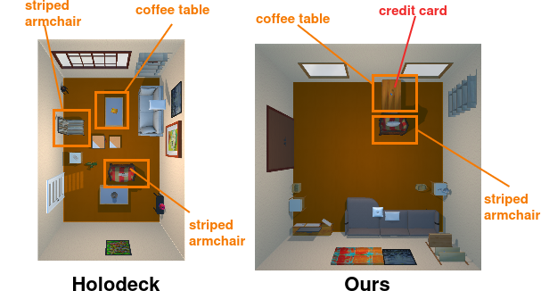
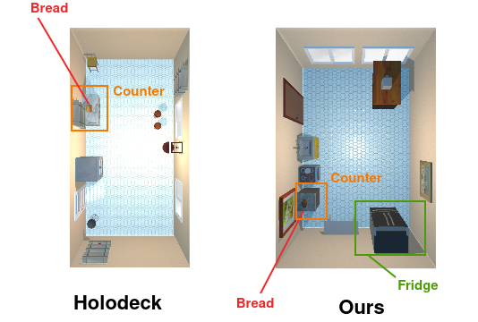
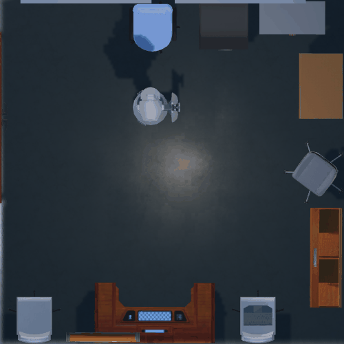
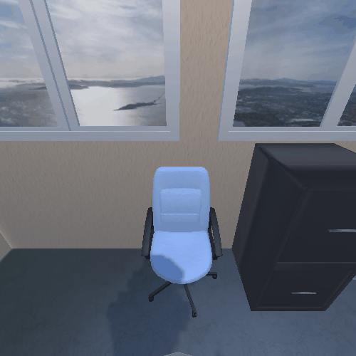
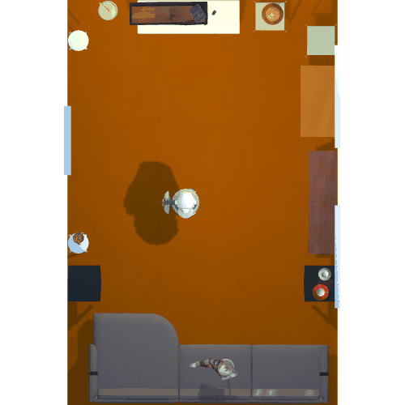
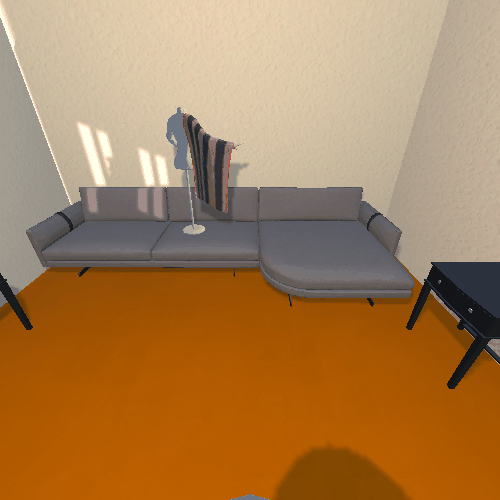
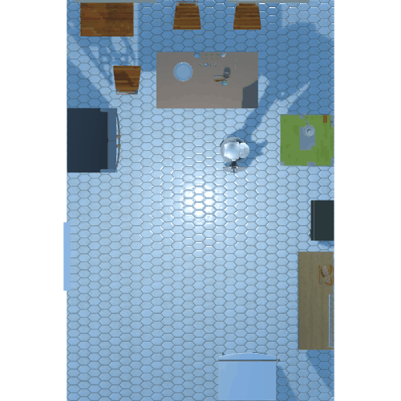

RESULTS
A comparison of Our method and HOLODECK.
Room Type: a living room.
Instruction: Move a credit card from the coffee table to the striped armchair.
sample 2

Room Type: a kitchen.
Instruction: Put chilled bread on the counter.
sample 1

Haptic-based Human-Robot Interaction
Room Type: a living room
Instruction: Place a laptop on the dresser.
Top-Down

Robot

Human
Room Type: a living room
Instruction: Examine a credit card by the light of a floor lamp and then turn it off.
Top-Down

Robot

Human
Room Type: a kitchen
Instruction: Put a chilled bread on the counter.
Top-Down

Robot

Human
Room Type: a kitchen
Instruction: Put a heat tomato on the table.
Top-Down

Robot

Human